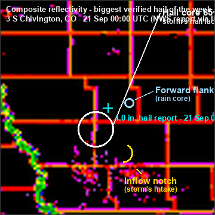
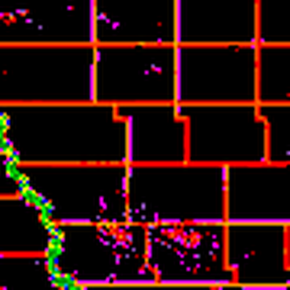

Real-time NEXRAD · Future radar 0-48 h · MRMS + NWS mosaics · every NWS radar site — drag to pan, pinch/scroll to zoom.
--:--
⚡ Lightning: GOES-19 Geostationary Lightning Mapper flash density (NOAA STAR, ~5-min cadence) — overlays every radar layer. Future radar: HRRR 3 km (0-18 h) + NAM 3 km nest (18-48 h). Individual sites: every NWS radar serves 5 modes — super-res reflectivity, velocity, hybrid scan, 1-hour + storm-total precip — full 460 km range, all animated. MRMS picker: height levels 0.5–15 km, dual-pol (ZDR/RhoHV), azimuthal shear, rotation tracks, hail, echo tops, precip. Everything renders in over the first few update cycles.
🧊 Hail signatures - read a real storm, hands-on
Today's worst verified hail core, straight off the NEXRAD archive. Read the annotations, then find the core yourself before revealing.

⚪ White ring - hail core 65+ dBZ: the storm's hail factory, where the updraft is strong enough to keep stones aloft growing.
✛ Cyan cross - verified report Ground truth: where 4.0-inch stones actually fell (2026-09-21 at 00:00 UTC).
🌸 Yellow arc - inflow notch The storm's intake: warm air feeding in, carved where the echo bends inward on the storm's flank.
🔵 Blue ring - forward flank The broad rain core downwind. Rain, not hail - a common trap when reading a storm.
Case: 3 S Chivington, CO - 4.0-inch hail reported 2026-09-21 at 00:00 UTC (NWS Employee, via IEM archive). Radar frame 2026-09-21 0010Z - CONUS composite reflectivity, cropped ~450 km around the storm, NWS dBZ color ramp. The lesson re-cases itself to the biggest hail report of the past 7 days whenever a new one lands.
👆 Tap the map where you think the hail core is - the strongest echo (65+ dBZ).

Tip: hail lives in the coldest colors - the tight magenta/white cluster, not the wide red rain shield. Your pick is scored against the verified core position.
The 4-step reading order:
Find the hardest echo - the tight magenta/white cluster. That's the hail core, the updraft's engine.
Check the shape - a core knuckled onto the storm's flank as an appendage means the updraft is tilted into the inflow, a classic severe signature.
Find the inflow notch - the carved-in indentation on the storm's intake side. Tight echo gradient there means strong rising motion.
Compare the forward flank - the broad rain shield downwind. If you called THAT the core, you read rain as hail; the real core sits back toward the notch.
Practice first, then this shows how far your pick landed from the verified core.
Case: 3 S Chivington, CO - 4.0-inch hail reported 2026-09-21 at 00:00 UTC (NWS Employee, via IEM archive). Radar frame 2026-09-21 0010Z - CONUS composite reflectivity, cropped ~450 km around the storm, NWS dBZ color ramp. The lesson re-cases itself to the biggest hail report of the past 7 days whenever a new one lands.